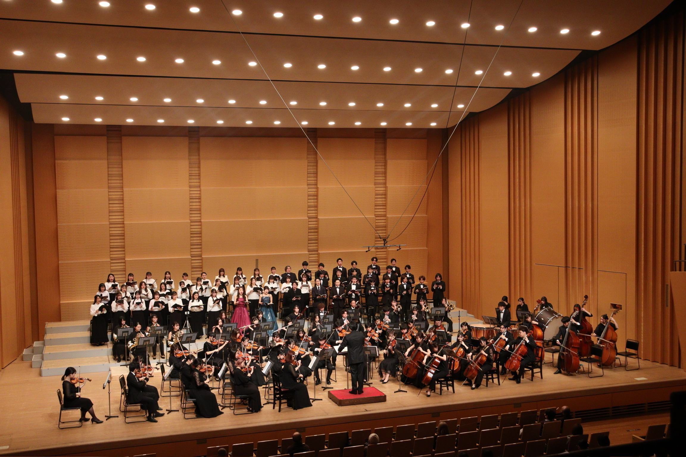
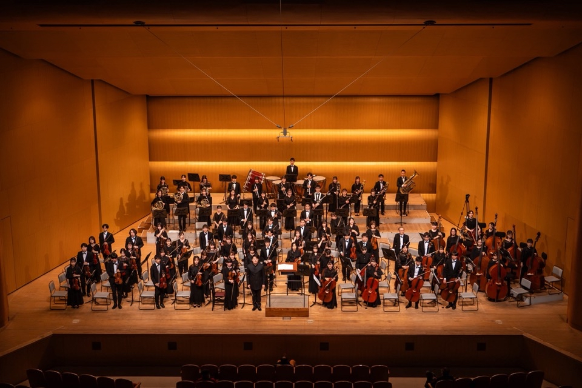
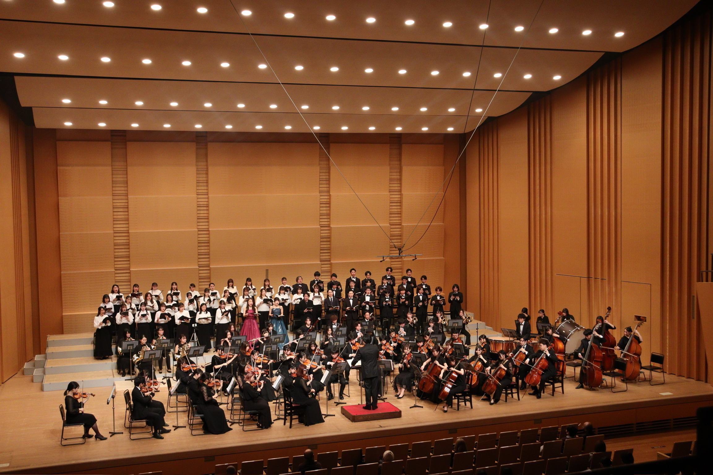
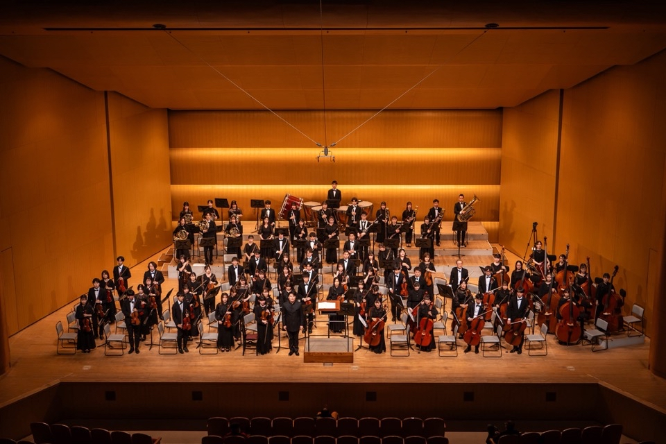
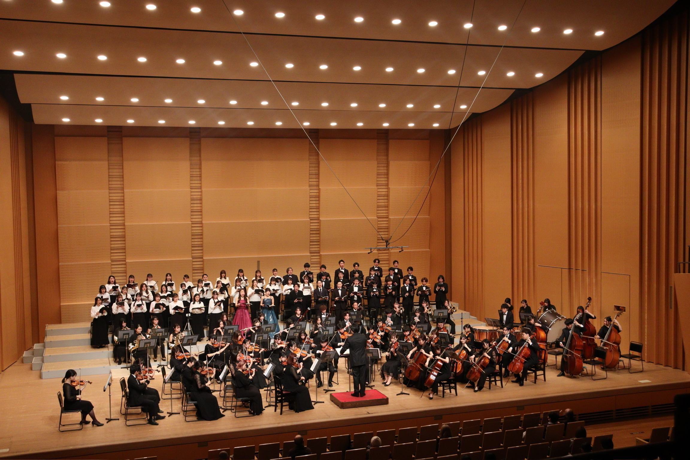
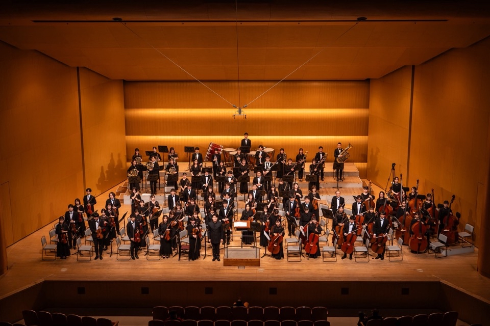

Photos
 



指揮者・ヴァイオリニスト・コンサルタント
東京外国語大学国際日本学部卒業。東京音楽大学指揮研修生修了。 4歳でヴァイオリンを始め、ソロ・室内楽での演奏に加え、これまでにSeikei String Orchestra、東京外国語大学管弦楽団、VariOrchestraのコンサートマスターを務めた。中学生の頃から混声合唱や弦楽オーケストラなどを指揮し、東京外国語大学在学中に東京音楽大学指揮科研修生として本格的に指揮を学び始める。Bach International Music Competition UK2024で第1位、GYMC2024 CRit. Max Bruch International Competition2024 でPlatinum Prize. WBMC2024で第1位（いずれも指揮部門）。 2020年、都内の音楽大学出身者を中心に呼びかけ、VariOrchestraを設立。演奏会の企画・運営、演奏を行う。定期演奏会においてコンサートマスターとして交響曲を弾き振りし、第3回定期演奏会では協奏曲のソリストを務めた。さらに特別公演ではベートーヴェンやブラームス、モーツァルト、シューベルト等の交響曲を指揮。HIP（Historically informed performance/歴史的知識に基づく演奏）の解釈を取り入れた新鮮な演奏が好評を博し、注目を集めている。 その他中高生のオーケストラの指導や、アマチュアオーケストラを指揮、またカズオ・イシグロ原作「遠い山なみの光」では広瀬すず氏への演奏・所作指導を行う。ヴァイオリンでは東久留米市第15回みんなのクラシックコンサート等に出演。 これまでに、ヴァイオリンを伊藤亮太郎、有働一美、大塚杏奈、白瀬ゆりの各氏に、指揮を増井信貴氏に師事。音楽以外の分野においても、総合コンサルティングファームでの大企業向けビジネス・業務改革支援を行いつつ、オンライン英語塾「TUFLINGUAL」の代表を務めるなど活動の範囲を広げている。

